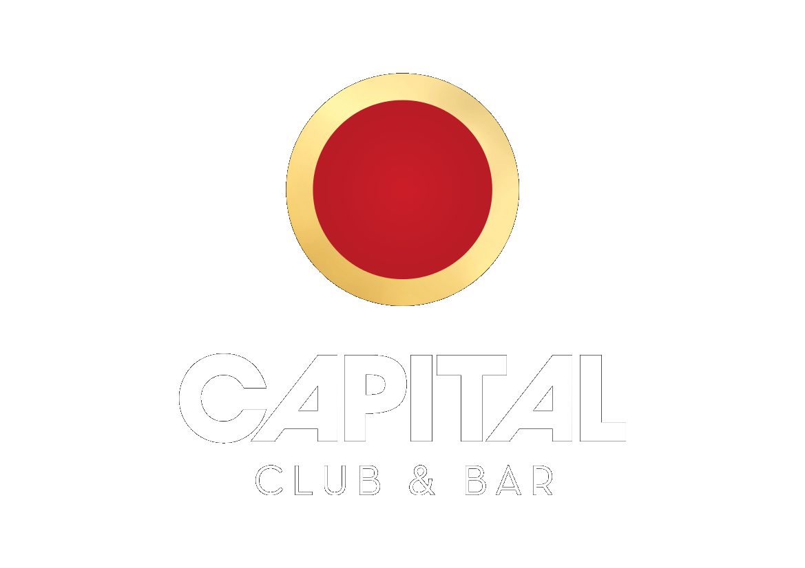
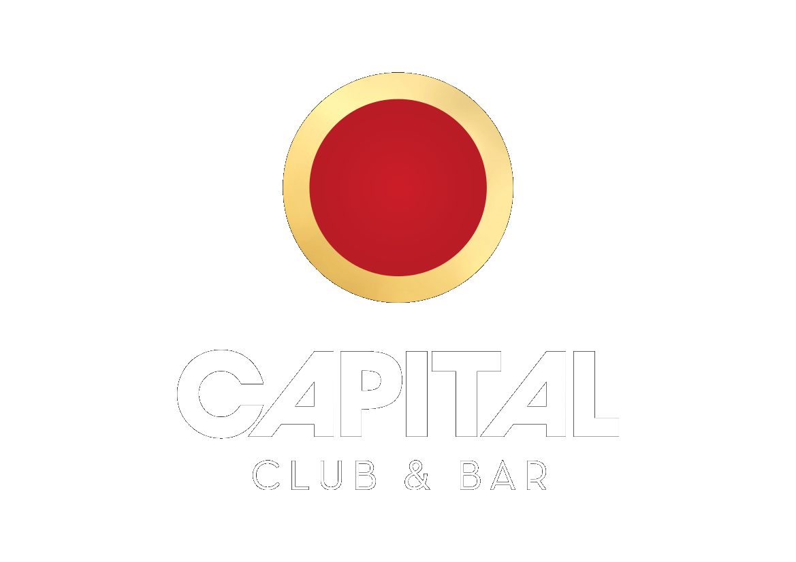

Polin appro ke 4.11.2015!
Polin appro -baariseikkailu tulee taas uudella ilmeellä! Tämä legendaksi muodostunut Suomen suurin teekkarivetoinen baarikiertely kerää yhteen kaikki opiskelijat ja opiskelijamieliset. Tule taistelemaan Hollywoodin kirkkaimman tähden tittelistä sekä bilettämään jatkoilla Sosiaalifobian ja Siman tahtiin!
 

Liput
13€ myyjiltä
13,50€ bailataan.fi:stä
7€ vain jatkot
Liput sisältävät jatkojen narikkamaksun (3€)
Suoritustasot
7 – Bronze
11 – Silver
15 - Gold
Muista approista poiketen suorituksiin ei vaadita aikaisempaa osallistumista, eli minkä tahansa suoritustason voi saavuttaa jo ensimmäisellä osallistumiskerralla.
Aikataulut
Tapahtuma alkaa portaittain kello 16.00 lähtien, jonka jälkeen kiertelyaikaa on 4 tuntia. Yhteiset jatkot pamahtavat käyntiin kello 21 alkaen Club Capitalissa (Fredrikinkatu 51).
Jatkojen aikataulu:
22:30 Sosiaalifobia
00:30 Sima
Kartta
Osallistujabaarit lisätään myöhemmin.
MIKÄ POLIN APPRO?
Polin Appro on Aalto-yliopiston ylioppilaskunnan (AYY) toimikunnan Isännistön ja Emännistön (IE) järjestämä tajunnanräjäyttävä appro Helsingin ydinkeskustassa. Appro sijoittuu Vanhan Polin ympäristölle teekkariuden alkulähteille rajaten approalueen Punavuoresta Kamppiin. Tänä vuonna 2015 appro järjestetään jo neljättä kertaa, sillä kaikkina aikaisempina vuosina meno on ollut huikeaa, kun lauma haalaripukuisia opiskelijoita ja opiskelijamielisiä tutkinnosta riippumatta ovat vallanneet Helsingin kadut. Muista approista poiketen Polin appro muuttaa muotoaan joka vuosi. Tänä vuonna approssa päästään nauttimaan Hollywoodin glamourista erilaisten erikoisrastien muodossa.
MIKÄ APPRO?
Appron ideana on kiertää approlippuun merkittyjä baareja juomaleimoja keräten. Illan mittaan kerätyistä leimoista saa jatkopaikalla haalarimerkin, joka määräytyy leimojen lukumäärän mukaisesti. Polin approssa suoritusaika on neljä tuntia. Kiertelyn jälkeen suunnataan kohti Club Capitalia, jossa ovat tapahtuman viralliset jatkot. Jatkoille pääsee approlipulla.
Mikä IE?
IE eli Isännistö ja Emännistö on AYY:n Teekkarijaoston alla toimiva toimikunta, joka järjestää tapahtumia. IE on perinteisesti ollut toimikunta, johon kuuluu teekkariyhdistysten tapahtumavastaavia. AYY:n myötä teekkareiden vahvistukseksi IE:seen on saatu myös muutama Kylteri ja Taikkilainen. Polin Appro on suurin IE:n yhdessä järjestämä tapahtuma. Koko porukkaa yhdistää innostus sekä antaumuksellinen asenne tapahtumien järjestämiseen luoden hauskanpidon puitteet kaikille.
Ota yhteyttä
Onko kysyttävää tai muuta mietittävää? Ota yhteyttä toimikunnan puheenjohtajaan IE-tirehtööriin sähköpostilla: joanna.haahti@ayy.fi
Tapahtuma Facebookissa